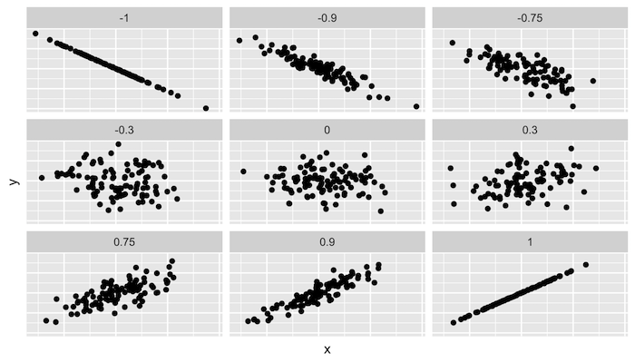
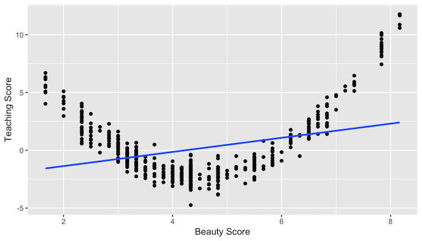
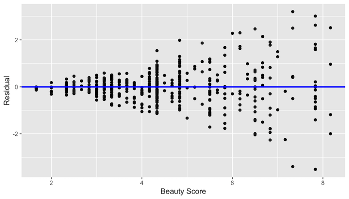
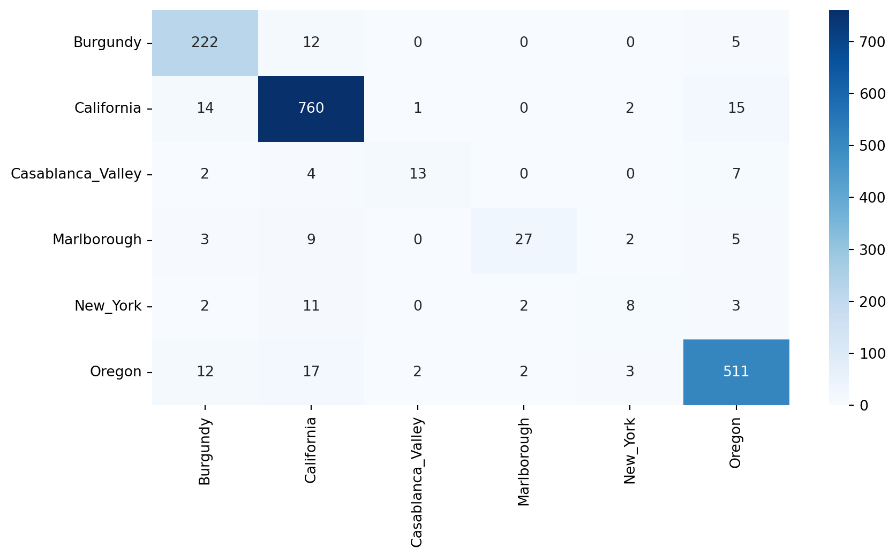

\(K\) Nearest Neighbors in Python
Applied Machine Learning
Agenda
- Review of Homeworks
- A human understanding of regression
- Dinner break
- Preprocessing and BoxCox
- The \(K\)NN algorithm and the Confusion Matrix
Homework
HW1
- We need to work on writing quality.
- We need to work on RMSE intepretation.
- We need to work on using
summaryresponsibly. - We need to work on applying lecture topics to leading questions.
- We would benefit from use of the
embed-resourcesoption in Quarto.
HW1 Sols Posted
HW2
- Think
- Pair
- Share
Today
Setup
Import
- Python base data stack
ML Library
from sklearn.linear_model import LinearRegression
from sklearn.preprocessing import PowerTransformer
from sklearn.model_selection import train_test_split, GridSearchCV
from sklearn.neighbors import KNeighborsClassifier
from sklearn.metrics import confusion_matrix, make_scorer, cohen_kappa_score
import reSetup
pyreadrto read in an R dataset.
Reporting Impact from Regressions
Correlation
http://guessthecorrelation.com/ …my high score is 72 (Jameson 122)
Calculating correlation
Exercise
- Calculate the correlation between \(\log\)(price) and points…
- …by variety…
- …for Oregon Chardonnay, Pinot Noir and Pinot Gris…
- …in the same expression!
Solution
- Make a function…
Eval
Visualizing these different correlations
Graphing residuals (bad)
Graphing residuals (good)
- Clearly should’ve made a function here.
Try it
Try it on year
Interpreting the coefficients
- Before examining many coefficients, a helper.
% Change
get_pct = lambda x : (np.exp(x)- 1) * 100
coef = get_coef(wine, "points", "lprice")
coef, get_pct(coef) (np.float64(0.10392268891742625), np.float64(10.951467381914615))- We logged the dependent variable (price)
- A 1 point ratings increase = ~10% price
- That is, a percent change in rating to an absolute change in the dependent variable.
- \((e^x - 1)*100\)
Interpreting the coefficients
(np.float64(0.017641923387450218), np.float64(1.779846130624252))- This is a de facto measure of inflation.
Some Examples
\(\log\) feature
wine['lpoints'] = np.log(wine['points'])
coef = get_coef(wine, "lpoints", "price")
coef, get_pct(coef) (np.float64(362.4947164430504), np.float64(2.6881597265771833e+159))- What does the sign (positive or negative) tell us?
- Was \(\log\) appropriate here?
LogLog (also elasticity)
…a 1% increase in ratings gives a ~9.2% increase in price on average
Summary
- Only the dependent/response variable is log-transformed.
- Exponentiate the coefficient.
- Subtract one from this number
- Multiply by 100.
- This gives the percent increase (or decrease).
Units
- Change is per one-unit increase in the independent variable.
- Here, independent is points.
- Dependent is price.
Example
- For every 1% increase in the independent variable…
- Basically, one point
- Our dependent variable increases by about 9.2%.
- A $30 bottle of wine scoring 90 would be worth $32.75 as a 91.
Graphing points by variety
Summary
variety
Chardonnay 89.744813
Pinot Gris 88.504566
Pinot Noir 89.489222
Name: points, dtype: float64- What are the percentage differences here?
Assumptions of linear regression
- Linearity of relationship between variables
- Independence of the residuals
- Normality of the residuals
- Equality of variance of the residuals
Linearity of relationship
What would the residuals look like?
Independence
Given our original model of \[ \log(\text{price})=m*\text{Points}+b \]
are there any problems with independence?
How could we check?
Normality
No equality in the variance
Credit: Modern Dive (click)
Preprocessing and BoxCox
Setup
- Pivot to pinot.
- Say “\(\pi^0\)”
Preprocessing
- Box-Cox transformations use maximum likelihood estimate to estimate value for \(\lambda\)
\[ y(\lambda) = \frac{x^{\lambda}-1}{\lambda} \]
- The goal is to make data seem more like a normal distribution.
in R
- LaTeX
\[ y(\lambda) = \frac{x^{\lambda}-1}{\lambda} \]
- Py
Examples
- When \(\lambda=1\), there is no transformation
\[ y(1) = \frac{x^{\lambda}-1}{\lambda} = \frac{x^{1}-1}{1} = x-1 \approx x \]
\[ f = y(-1) \implies f(x) \approx x \]
Examples
- When \(\lambda=0\), it is log transformed
\[ y(0) = \frac{x^{\lambda}-1}{\lambda} = \frac{x^{0}-1}{0} \]
\[ f = y(0) \implies f(x) \approx \log(x) \]
- Zero is a special case, but using a little thing called “calculus” this sorta makes sense.
- Basically, negative infinity at 0, then increase slowly once positive.
\(\lambda = 0\)
Examples
\[ y(1) = \frac{x^{\lambda}-1}{\lambda} = \frac{x^{.5}-1}{.5} = 2\times(\sqrt{x}-1) \approx \sqrt{x} \]
\[ f = y(.5) \implies f(x) \approx \sqrt{x} \]
Examples
- When \(\lambda=-1\), it is an inverse
\[ y(1) = \frac{x^{\lambda}-1}{\lambda} = \frac{x^{-1}-1}{-1} = \frac{x^{-1}}{-1}+\frac{-1}{-1} = \frac{1}{-x}-1 = -x \] \[ f = y(.5) \implies f(x) \approx -x \]
Just use the function
- Use
PowerTransformer
data = np.array([1, 2, 3, 4, 5]).reshape(-1, 1)
# Apply PowerTransformer (Box-Cox transformation)
pt = PowerTransformer(method='box-cox')
boxcox_result = pt.fit_transform(data)
# Print the result
print("Transformed data:", boxcox_result.flatten())
print("Lambda value:", pt.lambdas_)Transformed data: [-1.50122 -0.6466252 0.07922596 0.73236192 1.33625732]
Lambda value: [0.69029655]On Points
On Python
- I like the Python boxcox documentation:
The \(K\)NN Algorithm
Algorithm
- Load the data
- Initialize \(K\) to your chosen number of neighbors
- For each example in the data
- Calculate the distance between the query example and the current example from the data.
- Add the distance and the index of the example to an ordered collection
- Sort the ordered collection of distances and indices from smallest to largest (in ascending order) by the distances
- Pick the first \(K\) entries from the sorted collection
- Get the labels of the selected \(K\) entries
- If regression, return the mean of the \(K\) labels
- If classification, return the mode of the \(K\) labels
Basis
- We assume:
- Existing datapoints in something we think of as a space
- That is, probably two numerical value per point in a coordinate plane
- Categorical is fine - think a Punnett square
- Existing datapoints are labelled
- Numerical or categorical still fine!
- Existing datapoints in something we think of as a space
- To visualize, we will have a 2d space with color labels.
Let’s draw it

Let’s draw it 2

Let’s draw it 3
.png)
Engineering some features
- Tasters, years, notes
wine = pd.get_dummies(wine, columns=['year', 'taster_name'], drop_first=True)
wine.columns = [re.sub(r'\s+', '_', re.sub(r'-', '_', col.lower())) for col in wine.columns]
notes = ['cherry', 'chocolate', 'earth']
for note in notes:
wine[f'note_{note}'] = wine['description'].str.contains(note, case=False, na=False)
wine = wine.drop('description', axis=1)Split
Confusion matrix
- Let’s look at misses
X_train, X_test = train.drop(columns=['province']), test.drop(columns=['province'])
knn = KNeighborsClassifier(n_neighbors=5)
knn.fit(X_train, train['province'])
y_pred = knn.predict(X_test)
conf_matrix_df = pd.DataFrame(confusion_matrix(test['province'], y_pred, labels=knn.classes_), index=knn.classes_, columns=knn.classes_)
sns.heatmap(conf_matrix_df, annot=True, fmt='d', cmap='Blues')Confusion matrix

Determine what dominates
def omit(prefix):
X_train, X_test = train.drop(columns=['province']), test.drop(columns=['province'])
columns_to_drop = [col for col in X_train.columns if prefix in col]
X_train = X_train.drop(columns=columns_to_drop)
X_test = X_test.drop(columns=columns_to_drop)
knn = KNeighborsClassifier(n_neighbors=5)
knn.fit(X_train, train['province'])
y_pred = knn.predict(X_test)
conf_matrix_df = pd.DataFrame(confusion_matrix(test['province'], y_pred, labels=knn.classes_), index=knn.classes_, columns=knn.classes_)
return sns.heatmap(conf_matrix_df, annot=True, fmt='d', cmap='Blues')Test
Drop it
Tuning and subsampling
X_train, X_test = train.drop(columns=['province']), test.drop(columns=['province'])
knn = KNeighborsClassifier()
param_grid = {'n_neighbors': range(1, 16)}
kappa_scorer = make_scorer(cohen_kappa_score)
grid_search = GridSearchCV(knn, param_grid, scoring=kappa_scorer)
grid_search.fit(X_train, train['province'])
cohen_kappa_score(test['province'], grid_search.best_estimator_.predict(X_test))np.float64(0.2773925453866066)Group modeling problem I
- Practice running different versions of the model
- Create some new features and…
- See if you can achieve a Kappa >= 0.5!